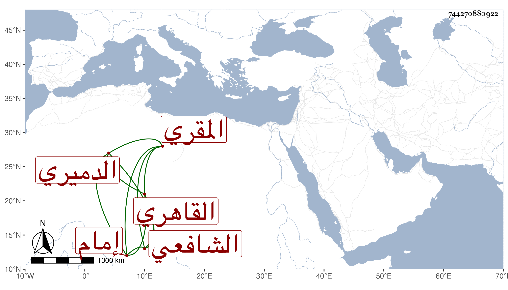

0902Sakhawi.DawLamic.ITO20230111-ara1.EIS1600.744270880922
Biography ID: 744270880922
890
زكريا بن حسن بن محمد الزين الدميري الأصل القاهري الشافعي المقري إمام الحسينية ويسمى عبد الرحمن أيضا ولكنه بزكريا أشهر . ولد تقريبا سنة خمس وعشرين وثمانمائة ، وحفظ القرآن والعمدة والمنهاج الفرعي والتبريزي وجمع الجوامع والألفيتين والشاطبيتين والتلخيص ، وعرض على المحب بن نصر الله وشيخنا والعيني وابن الديري في سنة تسع وثلاثين وأجازوه بل سمع على من عدا الأول وكذا على الزين الزركشي ، وتلا بالسبع على الشهاب السكندري بل قرأ عليه التيسير والشاطبيتين والألفية بتمامها ولحمزة والكسائي على ابن كزلبغا بل قال لي مرة أنه جمع عليه ولحمزة فقط على السنهوري المالكي وللثلاثة عشر على النور البلبيسي إمام الأزهر وابن أسد ، لكنه لم يكمل عليهما ولنافع وابن كثير وأبي عمرو على ابن الحمصاني ولأبي عمرو على الشارمساحي وعنه أخذ المجموع في الفرائض والحاوي الفرعي وكذا أخذ عن البدر القيمري في الفرائض وأخذ الفقه أيضا عن الشمس الشنشي والعلم البلقيني وحفيد أخيه البدر أبي السعادات والمناوي والعبادي في آخرين ، وقرأ على شرح ألفية العراقي للناظم بتمامه وغير ذلك دراية ورواية واغتبط بذلك مع قراءته له قبل ذلك على الفخر عثمان الديمي وكذا قرأ علي من تصانيفي القول البديع بعد أن كتبه وحج غير مرة وجاور في بعضها وأخذ في مجاورته عن الشرف عبد الحق السنباطي ، وأذن له غير واحد من شيوخه كالسكندري وشهد عليه المناوي وابن الديري والأقصرائي وإمام الأزهر والبدر البغدادي وولي إمام الحسينية وتنزل بالشيخونية ، وتكسب بالشهادة على خير واستقامة وسلامة وفطرة واستحضار لكتبه وانجماع حتى عن بني الدنيا مع كونه ممن كان اختص بالأمير يشبك الفقيه وقتا ونعم الرجل ، ووصفه ابن أسد في إجازة لولده بأنه شيخ القراء ومعدن الاقراء الشيخ الامام العالم المفيد النافع لخلق الله في العلوم فيدرس ويعيد .
